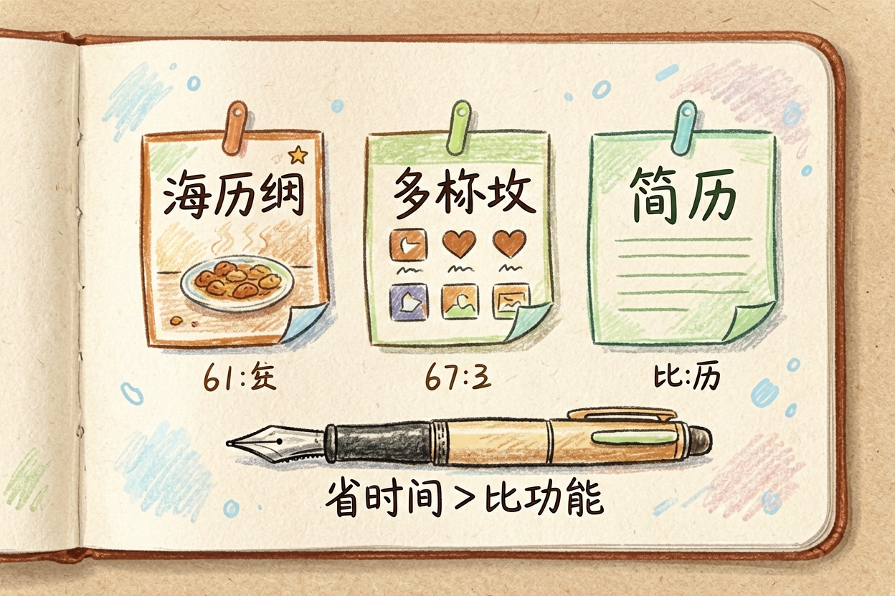
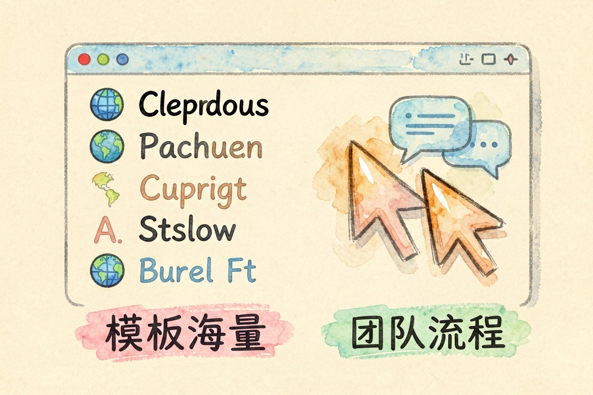
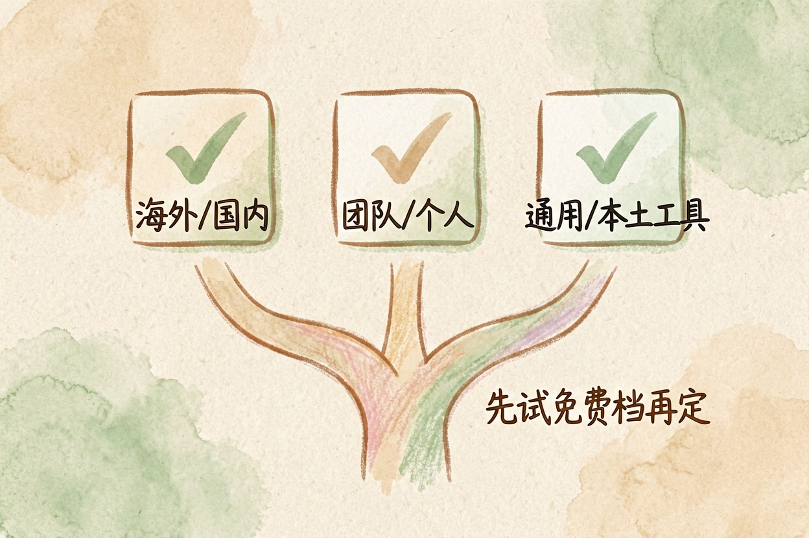

Canva 和稿定哪个好？做图场景分开来看 — Learntide
做图工具挑花眼的时候，先别急着比功能清单，而要看你手头最常被打断去赶的那类图。
canva和稿定哪个好：先看清你做什么图

canva和稿定哪个好，答案不在排名，而在你做什么图。两款都能在线出图，定位却不一样。Canva 胜在模板量和海外素材。稿定胜在中文场景和本土模板。先想清楚用途，再选不迟。
很多人被「功能多」带偏。功能多不等于顺手。你常做的那类图，模板齐不齐、改起来快不快，才是关键。别只盯着免费额度比高低，能省下的时间更值钱。你先列三张最常做的图，再对照下面的差异表，比空看功能清单要快得多。
Canva：模板海量，英文素材占优

Canva 的模板库很大。海报、简历、社媒图都有现成版式。它的强项是英文和国际化素材，字体、图标、插画选择多。做面向海外的图，它很省心。
协作也好用。多人同时编辑、评论、版本回溯都顺。团队做品牌物料，流程清晰。缺点也有。中文模板的本土味偏弱，一些国内节日、电商节点的专属版式要自己改。
它的免费档够个人玩。但去水印、用 premium 素材要付费。字体授权也要看清，商用前确认能商用。移动端功能比网页端少，复杂图还是在电脑上做。
稿定：中文场景贴地，电商模板多
稿定更懂国内平台。电商主图、详情页、公众号封面，模板直接对标淘宝、抖音、小红书的比例。改文案、换商品图很顺。做在国内平台投放的图，它上手快。
它还有不少本土小工具。抠图、证件照、拼图这类需求，一站搞定。对个人和小商家友好。弱项是国际化素材少，做海外向的内容要另找图。
模板更新也跟国内节奏。节假日、大促节点常第一时间上新。客服和教程是中文，遇到问题好找答案。这是它比海外工具接地气的地方。
横向对比：一张表看清差异
| 维度 | Canva | 稿定 |
|---|---|---|
| 模板风格 | 国际化、英文多 | 本土、电商多 |
| 中文适配 | 一般 | 强 |
| 团队协作 | 成熟 | 可用 |
| 本土小工具 | 少 | 多 |
| 海外素材 | 丰富 | 有限 |
这张表帮你看清差异。真要定，还得回到你的场景。免费额度和会员价会变，掏钱前再去官网定价页扫一眼更稳妥。用了一阵发现模板不够再去比也不迟，别在第一次就钻牛角尖。下面给个快速判断法。
怎么选：三问定方向
把下面三问过一遍，答案基本就清楚了：
选前自问：
1 图发国内还是海外？海外偏 Canva，国内偏稿定
2 要不要团队协作评审？要就 Canva，个人随手就稿定
3 是否常做抠图、证件照等本土小活？是就稿定
对照答案，多数人会立刻分出主次。先问自己三件事。要做海外向的图，选 Canva。要做电商、公众号这类国内图，选稿定。要团队协作评审，Canva 更稳。要一站抠图拼图，稿定更顺。
两款都开会员太浪费。先拿免费档各做一张同主题图，比一比手感再决定。canva和稿定哪个好，看场景，别看榜单。

本文信息核对于 2026-08-08。AI 产品的价格、免费额度与功能变动频繁，实际以各工具官网当前说明为准。